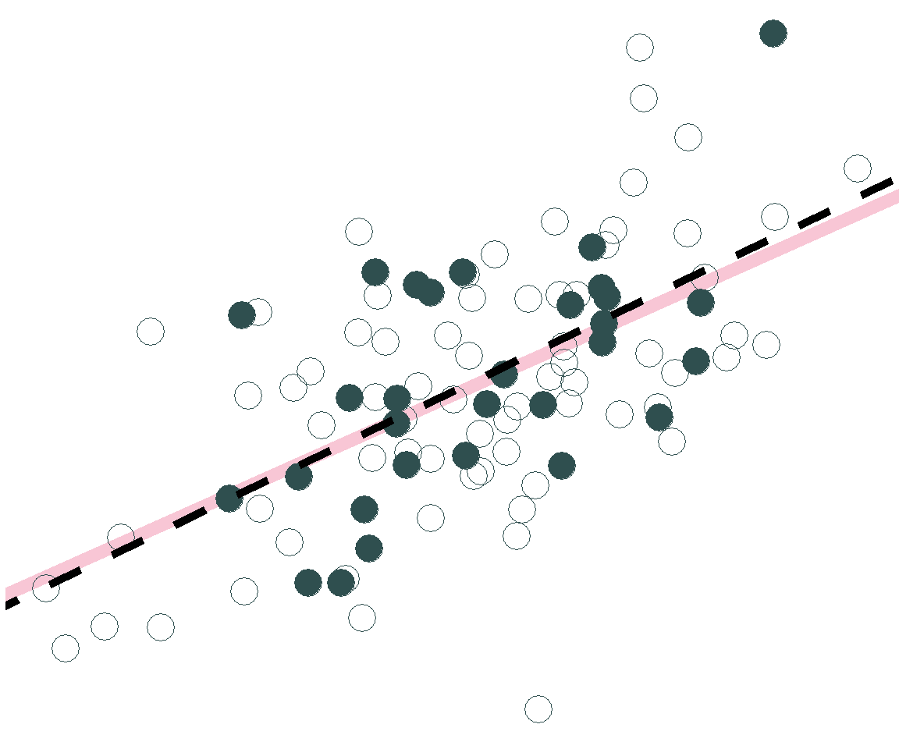
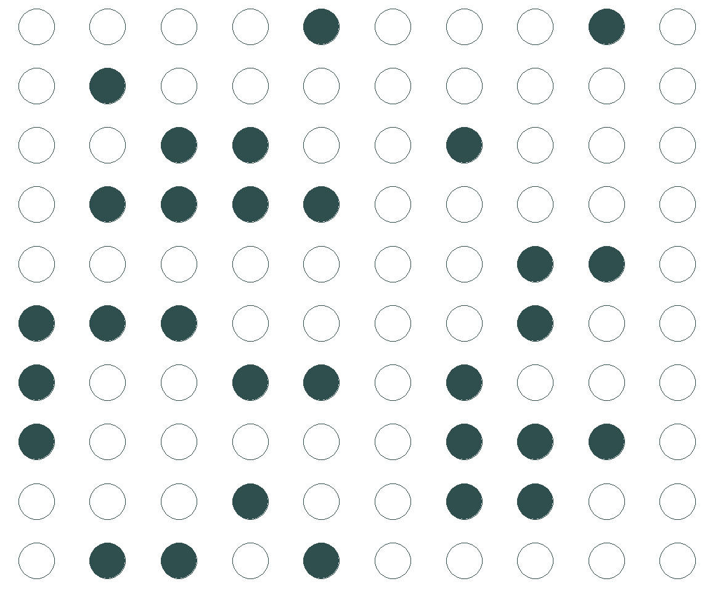
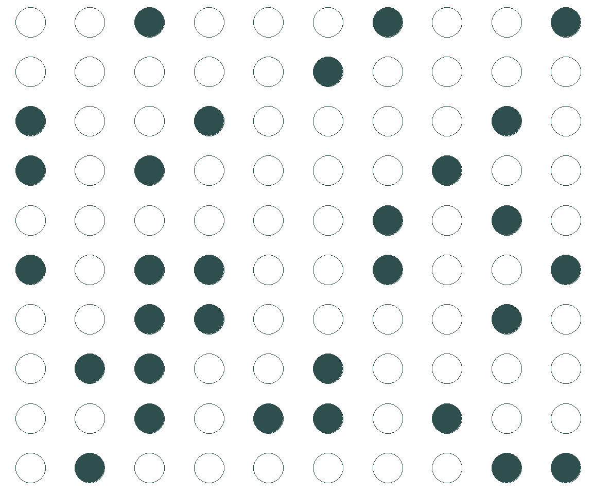

Más sobre Regresión Lineal
100 estudiantes están tomando Analítica de los Negocios y queremos saber el efecto de comer galletas en la felicidad para todos ellos. Asumamos que tenemos los datos para todos los estudiantes.
Luego tomemos muestras de 30 estudiantes y miremos cómo los coeficientes de la siguiente regresión varían de acuerdo a la muestra:
\[ felicidad_i = \beta_0 + \beta_1 galletas_i + e_i \]
\[ felicidad_i = 2.53 + 0.57 galletas_i + e_i \]
\[ felicidad_i = 2.53 + 0.57 galletas_i + e_i \]

\(\widehat{felicidad}_i = 2.36 + 0.61 galletas_i\)
\[ felicidad_i = 2.53 + 0.57 galletas_i + e_i \]

\(\widehat{felicidad}_i = 2.79 + 0.56 galletas_i\)
\[ felicidad_i = 2.53 + 0.57 galletas_i + e_i \]

\(\widehat{felicidad}_i = 3.21 + 0.45 galletas_i\)
Como no sabemos si tenemos una buena o mala muestra, y queremos:
\[ \hat{\beta} \xrightarrow{\text{ü§û ojalá ü§û}} \beta \]
usamos \(\hat{\beta}\) para acercarnos al verdadero efecto \(\beta\).
Por eso, utilizamos intervalos de confianza y pruebas de hipótesis para cuantificar la incertidumbre en nuestras estimaciones
Linealidad: hay una relación lineal entre la variable dependiente y la variable explicativa
Varianza Constante: la variabilidad de los errores es igual para todos los valores de la variable explicativa
Normalidad: los errores siguen una distribución normal
Independencia: los errores son independientes entre ellos
✅Los errores no siguen un patrón o estructura clara. Parecen aleatoriamente distribuidos
✅La dispersión vertical de los errores es relativamente constante en la gráfica
✅La distribución de los errores se parece a una distribución normal
Podemos verificar el supuesto de independencia a menudo basándonos en el contexto de los datos y en cómo se recolectaron las observaciones.
Si los datos se recolectaron en un orden particular, examina un diagrama de dispersión de los errores versus el orden en que se recolectaron los datos.
Al verificar las condiciones del modelo, preguntense si alguna desviación de estas condiciones es tan grande que:
Se deba proponer un modelo diferente.
Las conclusiones extraídas del modelo deban usarse con precaución.
Si no es así, las condiciones se cumplen suficientemente y podemos proceder con el modelo actual.
El \(R^2\) es el porcentaje de la varianza de la variable dependiente explicada por el modelo de regresión
\[R^2=Corr(x,y)^2=Corr(y,\hat{y})\]
Está entre 0 (nuestro modelo no predice nada) y 1 (predicción perfecta)
No tiene unidad de medida
Con la función glance() podemos ver diferentes aspectos que evalúan el modelo:
hollywood_model <- lm(us_gross ~ opening_gross + budget + sequel, data=hollywood)
glance(hollywood_model)# A tibble: 1 × 12
r.squared adj.r.squared sigma statistic p.value df logLik AIC BIC
<dbl> <dbl> <dbl> <dbl> <dbl> <dbl> <dbl> <dbl> <dbl>
1 0.790 0.782 18824686. 89.3 4.91e-24 3 -1361. 2731. 2743.
# ℹ 3 more variables: deviance <dbl>, df.residual <int>, nobs <int>según la primera columna, este modelo de regresión:
\[ \widehat{\text{US Gross}} = \hat{\beta_0} + \hat{\beta_1} \text{Opening Gross} + \hat{\beta_2} \text{Budget} + \hat{\beta_3} \text{Sequel} \]
explica el 79% de la varianza del recaudo total en US
hollywood_data.xlsx, evalúen si los errores del siquiente modelo de regresión son lineales, su varianza es constante y si se distribuyen normalmente:\[\widehat{\text{US Total Gross}} = \hat{\beta_0} + \hat{\beta_1} \times \text{Opening Gross}\]
¿Cuál es el \(R^2\) del modelo en el punto 1?
Comparen el \(R^2\) del punto 2 con el \(R^2\) de la diapositiva anterior. ¿Cuál explica más la varianza del recaudo total en US?¿Por qué creen que es así?
Para agregar el término cuadrático a la regresión, se incluye el término I(x^2) en el código:
modelo_felicidad <- lm(felicidad ~ galletas + I(galletas^2), data = galletas)
tidy(modelo_felicidad, conf.int = TRUE)# A tibble: 3 × 7
term estimate std.error statistic p.value conf.low conf.high
<chr> <dbl> <dbl> <dbl> <dbl> <dbl> <dbl>
1 (Intercept) 2.00 0.378 5.30 0.0000588 1.21 2.80
2 galletas 0.334 0.0828 4.03 0.000871 0.159 0.509
3 I(galletas^2) -0.0220 0.00383 -5.74 0.0000241 -0.0301 -0.0139Nuestro modelo estimado entonces es:
\[\widehat{Felicidad}=2+0.33\times Galletas-0.02 \times Galletas^2\]
\[\widehat{Felicidad}=\hat{\beta_0}+\hat{\beta_1}\times Galletas +\hat{\beta_2}\times Galletas^2 \]
Evaluamos con una prueba de hipótesis:
\[H_0:\hat{\beta_2}=0\] \[H_1: \hat{\beta_2} \neq 0\]
Como se menciono antes, es importante analizar la causa de los valores atípicos antes de eliminarlos, ya que pueden contener información valiosa.
Hasta ahora hemos asumido que el efecto de una variable es independiente de otra:
\[ y = \beta_0 + \beta_1 x_1 + \beta_2 x_2 + e \] El efecto del incremento en una unidad de \(x_1\) en \(y\), es siempre \(\beta_1\) e independiente de \(x_2\)
Por ejemplo:
\[\widehat{Felicidad}=\hat{\beta_0}+\hat{\beta_1}\times Galletas+\hat{\beta_2} \times Estudiante \]
Si pensamos que el efecto de \(x_1\) depende del valor de \(x_2\), entonces debemos agregar una tercera variable de interacción al modelo:
\[ y = \beta_0 + \beta_1 x_1 + \beta_2 x_2 + \beta_3 x_1x_2+ e \] El termino de interacción es \(x_1x_2\)
Por ejemplo:
\[ \begin{aligned} \widehat{Felicidad}=&\hat{\beta_0}+\hat{\beta_1}\times Galletas+\hat{\beta_2} \times Estudiante \\ & + \hat{\beta_3}\times Galletas*Estudiante \end{aligned} \]
El modelo donde las galletas tienen el mismo efecto para profesores y estudiantes
El modelo donde el efecto de las galletas puede diferir para profesores y estudiantes
Usando los datos hollywood_data.xlsx, creen una variable comedy que sea igual a 1 si el género de la película es “Comedy” y 0 en caso contrario.
Algunos productores de Hollywood creen que los retornos al recaudo el día del estreno son más altos para las películas de comedia. Comprueben esto Estimando la siquiente regresión:
\[ \begin{aligned} \widehat{\text{US Total Gross}}=&\hat{\beta_0} + \hat{\beta_1} \times \text{Opening Gross} + \hat{\beta_2} \times \text{Comedy} \\ & + \hat{\beta_3}\times \text{Opening Gross}*\text{Comedy} \end{aligned} \]
¿Tienen razón los productores de Hollywood? (Pista: \(\hat{\beta_3}\) debe ser positivo y estadísticamente diferente de 0)
Podemos considerar una transformación logarítmica de las variables de nuestro modelo (tanto variable dependiente e independientes) cuando:
Exista una relación no-lineal (exponencial) entre la variable dependiente y la explicativa.
Alguna de las variables tenga una distribución sesgada (muy distinta a la normal).
En este caso, la variable us_gross se distribuye log-normal
hollywood_model <- lm(us_gross ~ opening_gross, data=hollywood)
tidy(hollywood_model, conf.int = TRUE)# A tibble: 2 × 7
term estimate std.error statistic p.value conf.low conf.high
<chr> <dbl> <dbl> <dbl> <dbl> <dbl> <dbl>
1 (Intercept) 5108220. 4502660. 1.13 2.60e- 1 -3865567. 1.41e7
2 opening_gross 3.12 0.218 14.3 7.07e-23 2.69 3.56e0La regresión lineal estimada es:
\[\widehat{\text{US Total Gross}} = 5,108,220 + 3.12 \times \text{Opening Gross}\]
¿Cómo cambian los resultados si estimamos una regresión con ambias variables como logarítmos?
hollywood <- hollywood |>
mutate(log_opening_gross=log(opening_gross),
log_us_gross=log(us_gross))
hollywood_model_logs <- lm(log_us_gross ~ log_opening_gross, data=hollywood)
tidy(hollywood_model_logs, conf.int = TRUE)# A tibble: 2 × 7
term estimate std.error statistic p.value conf.low conf.high
<chr> <dbl> <dbl> <dbl> <dbl> <dbl> <dbl>
1 (Intercept) 1.58 1.09 1.45 1.51e- 1 -0.590 3.74
2 log_opening_gross 0.977 0.0658 14.8 9.60e-24 0.845 1.11La regresión lineal estimada es:
\[\widehat{\text{log(US Total Gross})} = 1.58 + 0.97 \times \text{log(Opening Gross)}\]
\[y=\beta_0+\beta_1x+e\] Interpretación: un cambio de una unidad en \(x\), está asociado a un cambio en \(\beta_1\) unidades en \(y\).
\[y=\beta_0+\beta_1log(x)+e\] Interpretación: un aumento de 1% en \(x\), es asociado a un cambio en \(\beta_1/100\) unidades a \(y\).
\[log(y)=\beta_0+\beta_1x+e\] Interpretación: un incremento de una unidad en \(x\), está asociado a un cambio de \((\beta_1\times 100)\%\) en \(y\).
\[log(y)=\beta_0+\beta_1log(x)+e\] Interpretación: un aumento de 1% en \(x\), está asociado a un cambio de \(\beta_1\%\) en \(y\).